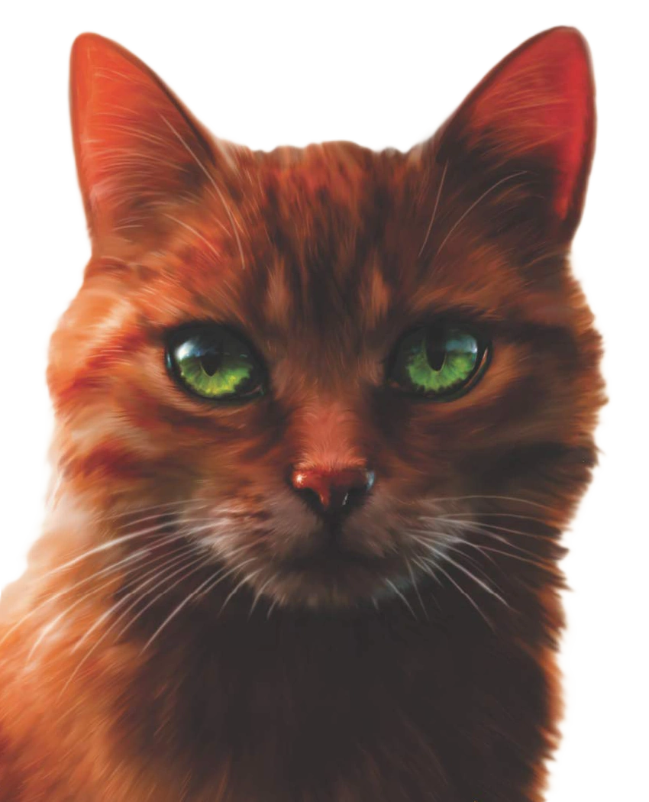

Ohnivý měsíc je štíhlý a svalnatý kocour se silnou postavou, která odpovídá zkušenému válečníkovi. Má ohnivě rezavou srst, podle které dostal své jméno. Jeho kožich je spíše krátký, hustý a dobře ho chrání před chladem i deštěm. Díky tomu je dobře přizpůsobený životu v lese.
Jeho oči jsou jasně zelené, bystré a pozorné. Často působí přemýšlivě, ale dokážou být i přísné, když je potřeba chránit klan nebo rozhodovat v těžkých situacích. Pohled Ohnivého měsíce většinou vyjadřuje odvahu a odhodlání, ale také soucit s ostatními.
Na těle má několik jizev, které získal během bojů a nebezpečných situací. Tyto jizvy jsou důkazem jeho zkušeností jako válečníka a připomínají, že si své postavení musel tvrdě vybojovat. I přes to nepůsobí hrozivě, spíš jako kočka, která ví, co dělá.
Celkově Ohnivý měsíc působí jako silný, sebevědomý a spravedlivý vůdce, který si zachoval skromnost a nikdy nezapomněl na své začátky jako obyčejný domácí kocour.
